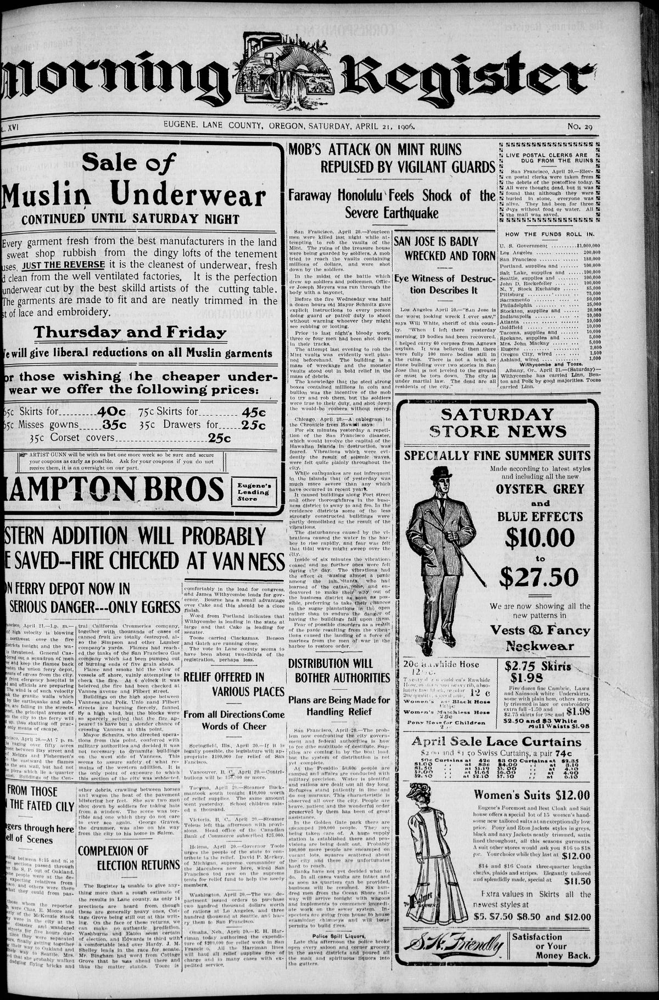
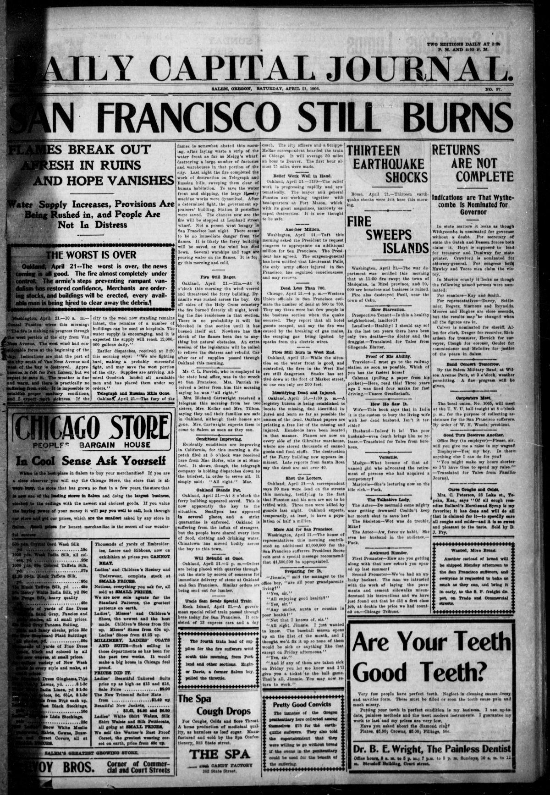
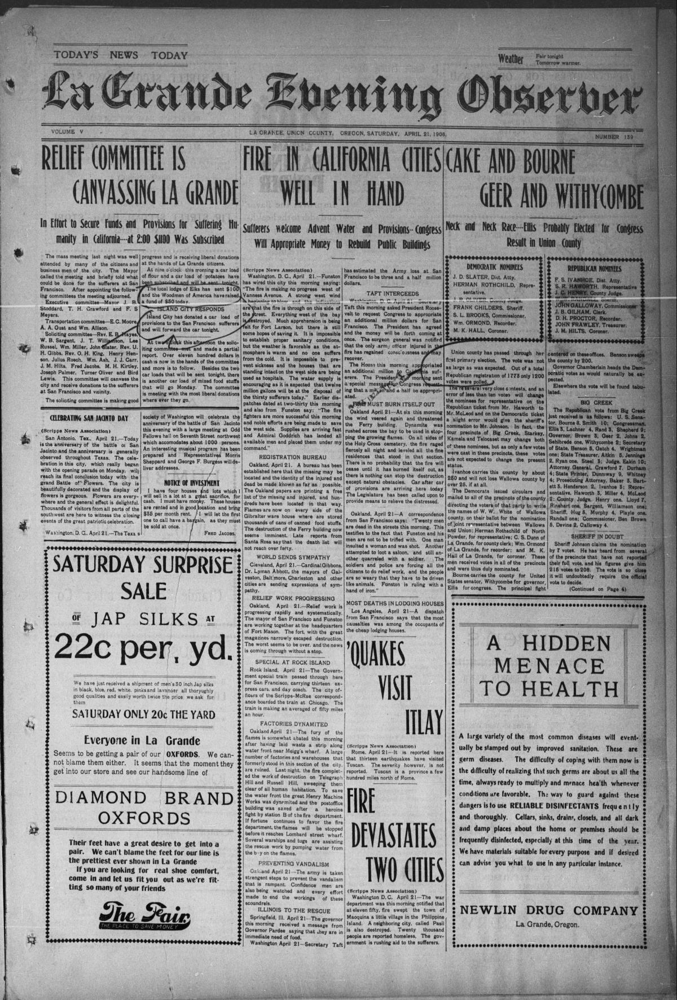

HN-353 · April 21, 1906 · Disasters, Accidents & Emergencies > Earthquakes & Volcanic Disasters > Earthquakes
1906 San Francisco earthquake seed printed an estimate toward 5,000 dead.
Source: Jasper County Democrat, p. 2 — original page; U.S. Geological Survey casualty review.
Report: A sweeping account of the April 18 earthquake and subsequent fires relayed destruction in San Francisco and surrounding towns, broken water mains and desperate rescues. One passage estimated that the deaths might reach 5,000, while immediately acknowledging that only a fraction of the bodies could yet be counted.
Assessment: The catastrophe is confirmed. The USGS explains why contemporary official and later research totals differ; later reconstruction puts the number killed near or above 3,000, not the news report's provisional 5,000. Specific claims about every burning hotel, the mint, military control, and nearby towns require local documentation rather than accepting the fast-moving composite dispatch wholesale.
Class: Unverified lead (Q)
Recorded difference/concern: 1906 San Francisco earthquake seed printed an estimate toward 5,000 dead.
Assessment: Four A follow-ups with incomplete figures; do not equate this seed estimate with verified deaths.
Source links: https://oregonnews.uoregon.edu/lccn/sn96088115/1906-04-21/ed-1/seq-1/ocr/ https://oregonnews.uoregon.edu/lccn/sn99063957/1906-04-21/ed-1/seq-1.pdf https://oregonnews.uoregon.edu/lccn/2006260039/1906-04-21/ed-1/seq-1.pdf
Authentic images retrieved from Historic Oregon Newspapers (University of Oregon) and Hoosier State Chronicles (Indiana State Library). Article crops are located using the archive's own OCR word coordinates and rendered at native crop resolution; article clips are assembled from the archive's own article-block images; page images marked "archive tiles" are stitched from the archive's own tiled page service at its 256-px tile cap; page images marked "issue PDF" are single pages rasterised from the archive's own issue PDF, with the page chosen by matching the headline against the PDF's text layer; page scans are reduced-size access renditions. No images were generated, mocked, or retouched.



Status: Archive images acquired
Authentic archive-owned image renditions were retrieved for this record and are displayed above. The source-acquisition manifest preserves the original pre-acquisition feasibility assessment.
URL (preserved verbatim): https://newspapers.library.in.gov/?a=d&d=JCDC19060421.2.2
Saved research report: Historical_Newspaper_Event_Research_353-377_2026-10-23.md
Evidence note: A newspaper report means a historical publication made a claim; it does not establish that claim as fact. Contemporary reporting is separated from later scholarly context and our own assessment.